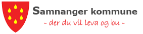

Kommunal organisasjon
- Politisk organisering
- Administrativ organisering
- Tenesteeiningar
- PPT (pedagogisk-psykologisk teneste)
- Opningstider
- Fagforeiningar
- Interkommunalt samarbeid
- Samhandlingsreforma
- Planar, reglement, vedtekter og handbøker
- Avgifter, gebyr og skattar
- Tilskotsordningar
- Ledige stillingar
- Nyhende/kunngjeringar
- Personvern og personvernombod
- Telefonnummer / e-post
- Verneombod og verneområde
- Årsmeldingar